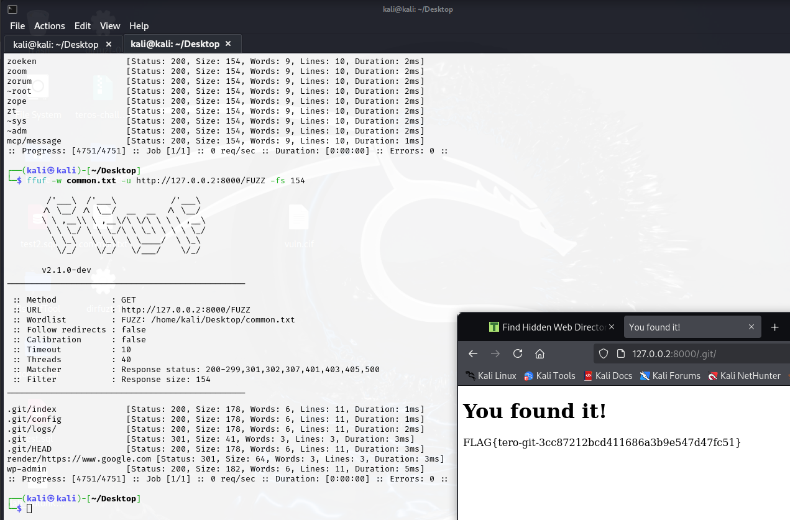
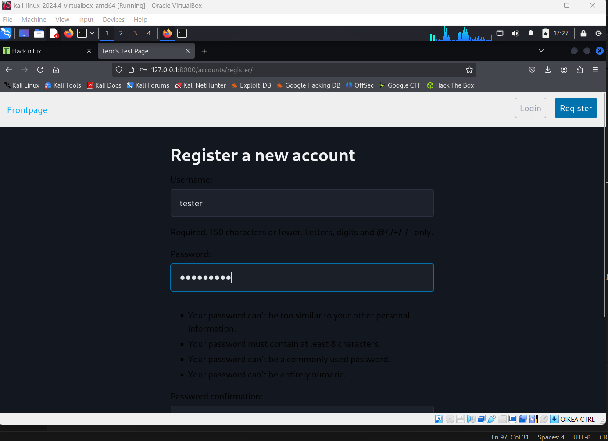
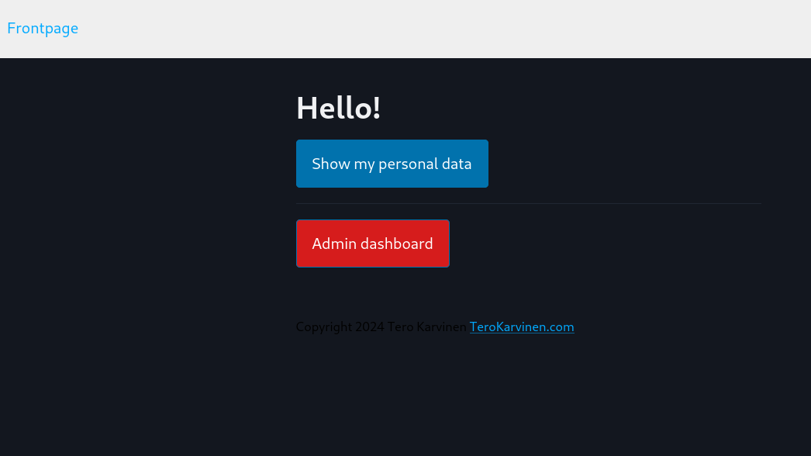
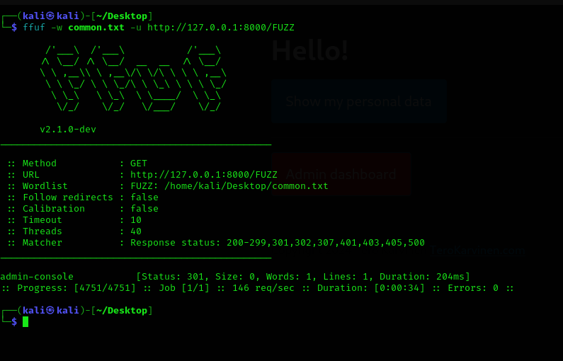

h2 Break & Unbreak (Tero)
x)
- common access control vulnerabilities are
1. attacker can just access admin pages as regular user
2. attacker can simply edit username cookie
3. attacker can access restricted pages without logging in
- you can use fuff to find hidden directories, for example /login, /dashboard
ffuf uses wordlist to find different pages
- sql injection is vulnerability that attacker can use to access sql database or to login to another user without password
I referenced sources that arre given in homework assigment h2:
https://terokarvinen.com/application-hacking/#homework
Environment
OS, browser, hardware, network
windows 11 with kali Linux virtualbox
firefox
Any precautions taken
virtualbox is a precaution, code is running a virtualized os
a) Break into 010-staff-only. See Karvinen 2024: Hack'n Fix
hack
What methods you used for testing the applications (successfull and unsuccesfull).
I used developer tools and sql injection
hack is partially successful
What the vulnerability is?
How to exploit the vulnerability and how each part of your exploit work.
Refer all documentation and sources you used
https://terokarvinen.com/hack-n-fix/
this site gave me instructions how to run the vulnerable server
1. i installed: $ sudo apt-get -y install wget unzip micro python3-flask python3-flask-sqlalchemy
2. i unzipped tero challenge and started the server.
3. i wrote "123" user pin code and got: "Your password is Somedude"
4. i used developer tools to edit input type number to input type text
5. i wrote "123' or 1=1; --" in pin code and got: "Your password is foo"
I looked the source code and this is someone else's password i didn't got admin password, but the code has sql vulnerability.
b) fixing code
i cast pin value to int and int value back to str. Then if user enters other than numeric value, internal server error happens
because str value "hello" cant be casted int but str value "12" can be casted int
original line:
sql = "SELECT password FROM pins WHERE pin='"+pin+"';"
edited line:
sql = "SELECT password FROM pins WHERE pin='"+str(int(pin))+"';"
better ways to do it (needs a lot of time):
1. use table class to search data, table class is coded to escape data
-- for example $table->select(table_name, ["column1", "column2"], ["username" => "John", "pin" => 123])
-- definition (table_name :str, columns :array, where :array)
-- you can use framework table class or code own table class
2. use sql prepare statements or parametrised query
sources:
https://www.btelligent.com/en/blog/best-practice-for-sql-statements-in-python-1
https://mojoauth.com/escaping/sql-escaping-in-python#real-world-examples-for-sql-escaping-using-python
c) dirtfuzt-1 challenge
first, i used ffuf command to check hidden directories
i downloaded common.txt file
tero karvinen blog (https://terokarvinen.com/2023/fuzz-urls-find-hidden-directories/) said: "We can use one from Seclists by Daniel Miessler and others.
$ wget https://raw.githubusercontent.com/danielmiessler/SecLists/master/Discovery/Web-Content/common.txt"
ffuf -w common.txt -u http://127.0.0.1:8000/FUZZ
FUZZ means that it will be replaced as wordlist word
-w means wordlist file location
-u is the url
i got status 200 for every url so Tero Karvinen blog says i can use -fs to filter by size. I used -fs 154 and got .git directory and wp-admin directory
wp-admin is probably wordpress admin site, maybe endpoint is using wordpress hmm...
.git directory is when you use git, site owner forget to exclude .git directory.

d) Break into 020-your-eyes-only. See Karvinen 2024: Hack'n Fix
first i created a new user

i tried to enter admin dashboard but get error 403

so i used ffuf to search hidden pages and i found admin-console

I can see a secret page. When i signed out, i can't see the page anymore so authentication is checked but authorization is not.
I tried to fix the problem using tree and locating the files but i didn't understand django and didn't got it fixed so i used fuzz-urls-find-hidden-directories
And i got it working using the solution https://rbin.dev/diary/entries/diary.html?entry=SH24-002&week=
So, Robin Niinemets said in the solution that challenges/020-your-eyes-only/logtin/hats/views.py is the problematic files
Robin Niinemets fixed the exploit adding authorization check to admin-console